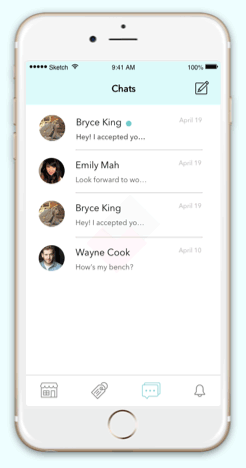
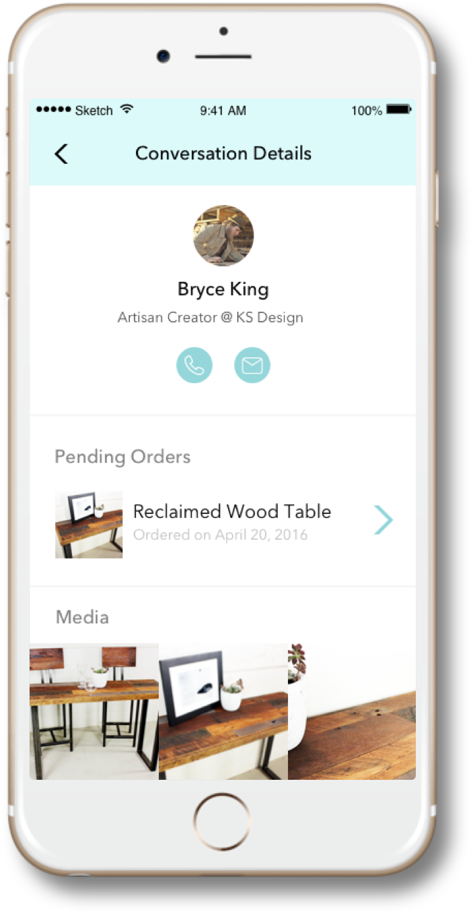

Kabuni Maker Market was an app for artisan furniture makers to connect with interior designers. This app was to be part of the Kabuni line of tools to revolutionize online furniture shopping. Working with a team of 3 designers, my main role for this project was leading the user research and creating the chat feature.
Research consisted of competitive analysis, user interviews, contextual inquiries, and surveys. This combination provided us with both qualitative and quantitative data. As the lead user researcher for this project, I ensured that the team was involved as much as possible, such as being present in user interviews, in order for them to understand more about the users and the problem.
Conducting user interview is amazing as it allows you to have a two sided discussion with the user. On top of interviewing friends in the industry, we had a lot of success interviewing people coming out of Home Depot. The results helped us discover that chat is more than just for communication, it was to establish trust.
We were able to get quantitative data on user behavior through a mass survey. We designed this survey in Google Forms and distributed it online forums and Facebook groups. Posting on Facebook groups generated the most traffic from furniture makers as we found that was the social media of choice for them. From the survey, we pinpointed that 86% of our users struggled with proper and fast support.
After gathering all this data, the team decided to use a combination of user personas, affinity diagrams, and user flows to help visualize our results. Through user personas, we were able to humanize our data which helped us understand that our users were not tech-savvy and needed simplicity throughout the app. The affinity diagram and following whiteboard sessions helped carve out main features. We then created user flows to help connect these features together.
The design process started with sketches. We thoroughly tested each sketch with users before digitalizing them into wireframes. As we split off each section/feature, we created a style guide for the app and merged it with the existing Kabuni style guide. Afterwards, we created the mock-ups. We then did a second round of user testing to refine the visual aspects.
As our users were not too tech savvy, they needed to instantly understand how to use chat without the need to re-learn a new set of controls. Thus, we kept the feel of iOS messaging but branded it with hints of Kabuni.
As discovered in our survey, great support was very important. Instead of having email tickets, we decided to embed support into chat so users can talk to live Kabuni agents for help.
Conversations can be messy and difficult to organize. Through a more details section, users can quickly find relevant information pertaining to the conversation. One particular feature was the linkage of orders from the main Kabuni app to the Maker Market. This was the first step for the apps to talk to each other and the creation of a suite of tools.
